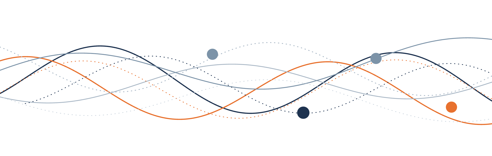
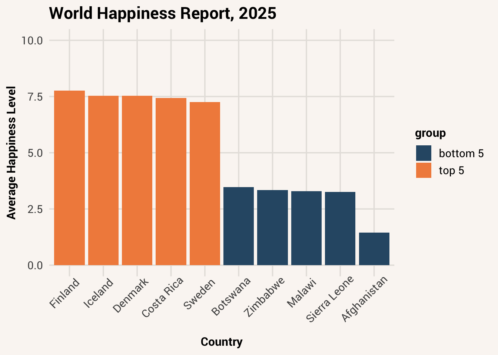
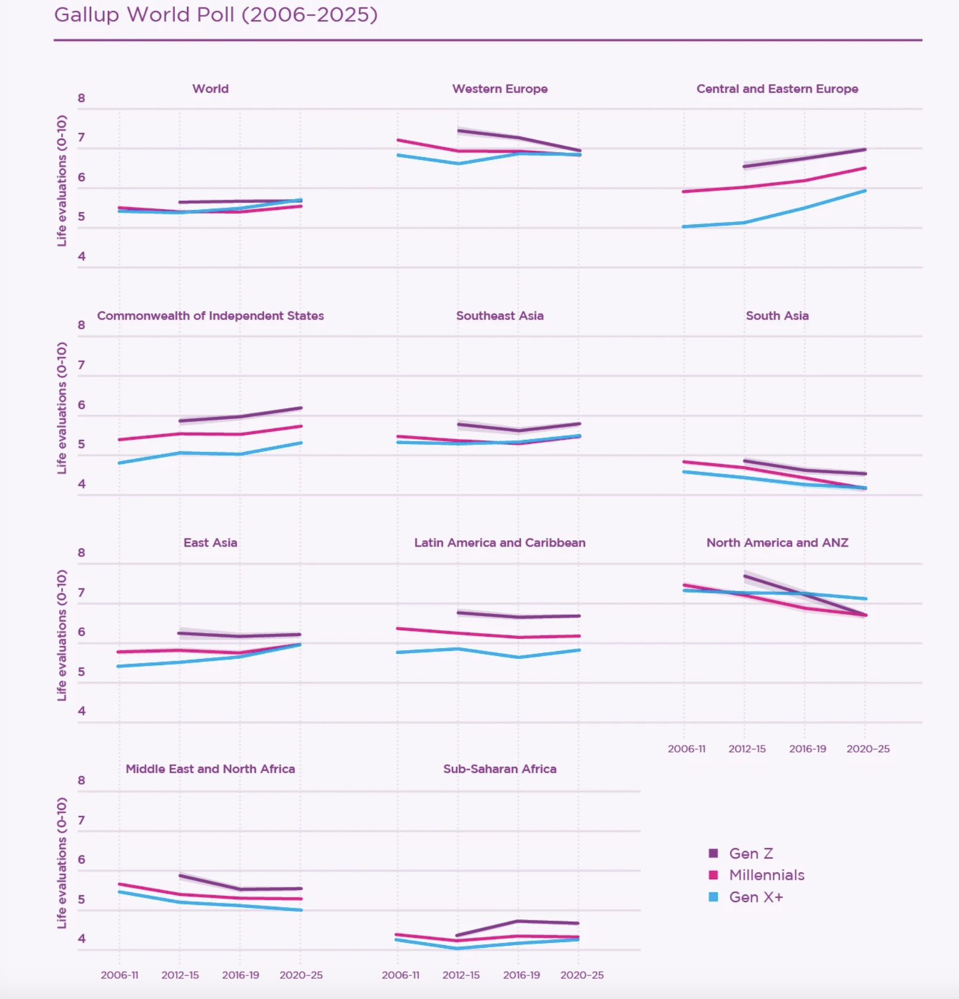
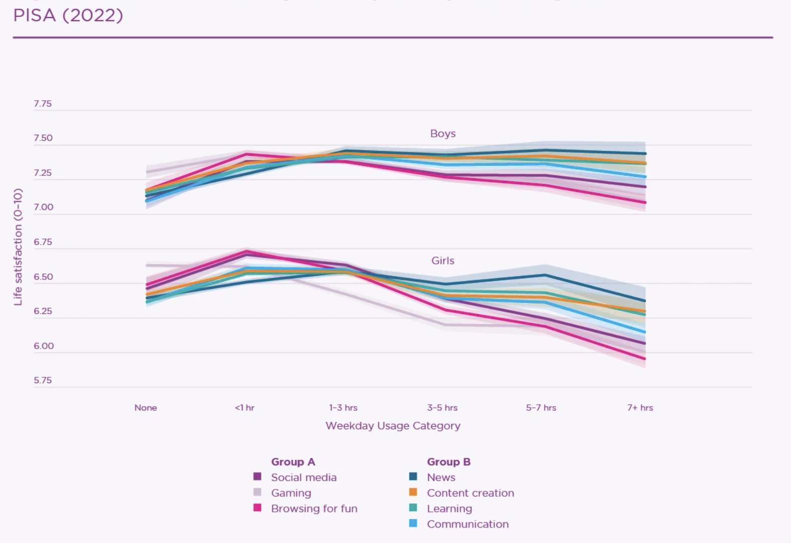
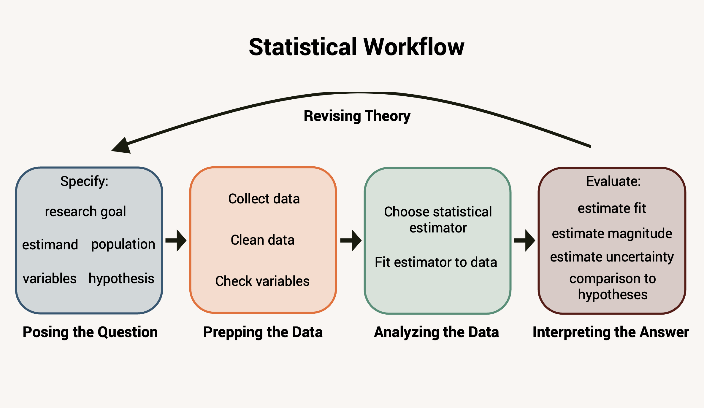

1 Statistics as a Way of Thinking

What comes to mind when you hear the word “statistics?”
For some people, they think of a collection of numbers, like a baseball player’s strike out rate or home run count. For others, they think of people with big brains working on big ideas in science. A significant portion of people feel some anxiety or trepidation, dreading the math and complex theory. If you are a student reading this book, chances are you are required to and you might not be happy about that.
But statistics is so much more than numbers on a spreadsheet or solving equations.1 It is a way of thinking, an approach to seeing the world and making decisions. It is an interdisciplinary method, with philosophy, natural science, and computer science forming the foundation along with mathematics. And it is useful to everyone, whether you are a scientist doing data analysis every day or a casual reader who wants to be more informed about the world around them.
The purpose of this introductory textbook is to prepare you for this kind of thinking. Statistics is a deep field, and we won’t cover all the details of all the statistical analyses you could potentially run on a dataset. But after making it through this book, you will be well-positioned to learn those details afterwards and the logic of how they work. You will also be able to understand the products of other people’s statistical work (and judge whether they did it well or not!).
To begin, this first chapter will discuss why statistics is important, what kinds of questions statistics can answer, and how to start working with data yourself.
1.1 Why is statistics useful?
Choosing a new doctor, deciding whether to bring a jacket, picking the best way to save for retirement - everyday life is full of instances in which we don’t know exactly what’s going to happen or how something works, but we still need to figure out the best course of action. How do we make effective decisions with limited information?
In science, we hope to discover fundamental principles of how the world works. But things like people, animals, weather, even microscopic bacteria can vary between each other in a multitude of ways, for a multitude of reasons. How do we make sense of this miasma of complexity? How do we find the signal in the noise?
We may be tempted to use our intuition to answer these questions. The human brain is pretty good at learning patterns from experience. However, we don’t get to experience everything first hand, and not all patterns in the world are apparent to us even when we do experience them.
For example - should you pick up smoking? Probably not, because it is common knowledge that smoking is bad for your health. Large studies of smokers and non-smokers in the 60s and the 80s showed that smokers died from from lung cancer during the study period at substantially higher rates than non-smokers (Figure 1.1). E.g., ~341 per 100,000 male smokers vs. ~10 per 100,000 non smokers. However, these rates still aren’t very high: that’s a 0.003% chance vs. 0.0001% chance of dying from lung cancer during the study. If this research didn’t exist and all you had to go on was the health of 20 smokers and 20 non-smokers you knew in your community, it is very unlikely that you would notice any difference in lung cancer rates between the two groups. If everyone you knew were smokers, you wouldn’t even be aware that another group might have a different lung cancer rate!
We also have a tendency to over-interpret information that is particularly shocking or memorable. According to the USA Bureau of Transportation Statistics, between 2003 and 2023, passengers in cars and trucks were injured at a rate of 42.2 people per 100 million miles traveled while airplane passengers were injured at a rate of just 0.004 per 100 million miles. This makes air travel the safest mode of transportation in the US. However, when plane crashes do happen, they get a lot of vivid media coverage. So when people think about accidents in cars and planes, it is easier to recall memories of devastating plane crashes. This makes people think plane crashes are more likely (psychologists call this phenomenon the “availability bias”). As a result, aviophobia (fear of flying) is much more common than the arguably more rational amaxophobia (fear of driving).
Statistics gives us an alternative method for decision-making. It is an approach to knowledge that allows us to pull insights from many pieces of data, describe uncertainty around those insights, and make evidence-based predictions about what comes next. When done appropriately, it is a more powerful method of learning about the world than relying on one person’s observations.
In fact, statistics is so powerful that companies spend billions of dollars each year to collect data about people’s behavior - because statistical insights from those data generate trillions of dollars in revenue. Everyday advantages like large scale manufacturing, artificial intelligence, and personalized products wouldn’t be possible without statistics. On the other hand, data and statistics are central to modern issues about surveillance, economic inequality, and political interference. A well-informed society in the 21st century is one that understands how their data is being used, and who are empowered to use it themselves.
1.2 How to ask a statistical question
“Forty-two?!” yelled Loonquawl. “Is that all you’ve got to show for seven and a half million years’ work?”
“I checked it very thoroughly,” said the computer, “and that quite definitely is the answer. I think the problem, to be quite honest with you, is that you’ve never actually known what the question is.”
– Douglas Adams, The Hitchhiker’s Guide to the Galaxy
The first step toward developing the right mindset for statistical thinking is knowing how to pose a statistical question. Data can provide useful information; they can also lead us astray if we aren’t careful about how we look at them.2 Contrary to popular belief, data cannot “speak for themselves.” What we learn from data and how useful they are entirely depend on the question we’re asking of them and how we interpret the answers.
Not every kind of question is a good fit for statistics. It probably can’t tell you matters of the soul like the meaning of life, what is beautiful, or what is morally right to do. But there are certain kinds of questions that statistics is good at. Research will fall into one of three types of goals: description, prediction, and explanation. Below we’ll explore what these research goals are and how the same data can be analyzed differently depending on one’s goal.
1.2.1 Describe
A descriptive research goal focuses on understanding the state of a group of things in terms of amounts, levels, rates, or other quantitative values. For instance, the World Happiness Report is a yearly analysis of survey data collected from people in more than 140 countries. The Report looks at people’s responses to questions about their well-being and other factors in their lives. One question we may have for these data could be as simple as “how happy are people in each country?” This is a descriptive research goal because it asks for a quantifiable value (level of happiness) that would characterize some population (people in each country).
The number of people in this survey is more than 130,000 - that makes it very hard to look at all the numbers directly to come up with an answer to our descriptive question about happiness. For this reason, we need to summarize the data some way - distill it into succinct pieces of information that are easier to look at, but that still give a sense of the whole dataset.
Below is a plot that summarizes the amount of happiness in the top and bottom 5 countries (Figure 1.2). It calculates the average reported happiness score in each country in order to make one data value that represents all the people surveyed.

From this plot, we can get a quick answer to our research question. For instance, look at the average happiness score in Finland - a little over 7.5. The scale used in this survey went from 0 (“worst possible life”) to 10 (“best possible life”), so based on this value we could describe people in Finland as quite happy. Meanwhile, there is clearly a different level of happiness in Afghanistan: ~1.5 out of 10. People in Afghanistan in 2025 are very unhappy, and much less happy than people in Finland.
While summaries like averages are very useful to get a general description of a group, they mask the fact that not everyone within a country has the same happiness level. Surely there are people in Finland who are very unhappy with their current life, while there are people in Afghanistan who are happy. There is variation in scores within a group. This means happiness is a variable - a piece of data that has different values in different people.
Luckily, there are multiple ways you can summarize and describe data. A statistic like an average represents the typical or common score in a group. But we could also ask “is everyone equally happy?” If not, “how much do people vary?” To answer that, we would summarize the same data differently: e.g. by finding the range of scores that the middle half of a country fell within. We could then report both of these summaries together to get a better description: “The average happiness level in Finland is 7.5 (middle 50%: 6-9)”.
In sum, when we want to answer the “who, what, when, where” of a dataset, we have a descriptive goal. To achieve this goal, we use statistics to summarize a complex dataset with much simpler numbers.
1.2.2 Predict
The data in the prior section consisted of surveys from approximately 1,000 people in each country. That’s a lot of people, but it doesn’t include everyone who is currently living, or who will ever live, in a country. If we wanted to guess how happy a specific person was who hadn’t been surveyed, could we use these data to help?
This is a case of a prediction goal - correctly guessing something about a data point. Typically prediction is focused on determining the value of some information we don’t have, or something in the future, based on other information we do have. This is a common goal in weather forecasting (“where will this hurricane land?”), insurance (“how likely is this person to get in a car accident?”), finance (“how will this new stock perform?”), and many other areas.
Here’s an example of prediction in the World Happiness data. Let’s say we want to know how happy an 18-year-old is likely to be in 2025 in Poland. Look at Figure 1.3 below, which shows the data divided up based on world region, year, and respondent age:

We can see some trends in these data. For instance, in Central and Eastern Europe, happiness seems to be going up over time. In most places, Gen Z (those born after 1997) seem to be happier than people born earlier. Most importantly, the level of happiness for different combinations of this information is different than the average happiness for the whole world. We can leverage these data patterns to make a more specific guess about our hypothetical Polish teenager’s happiness. Based on these data, a guess like 7 is more likely to be correct than 3.
If we are to make predictions about new people, it’s important that our predictions are good. You wouldn’t trust a prediction that did no better than if you randomly guessed a happiness score. You might not want to use a prediction that was based only on a particular group, like high-income people, if you were trying to predict someone in a different socioeconomic group; the statistical relationships you calculated in one situation might not apply in new contexts. In addition to making predictions, statistics also gives us the tools to evaluate the quality of these predictions.
1.2.3 Explain
The lines in Figure 1.3 show that some groups of people are happier than others. You have a description goal if you want to ask how happy a certain group is; you have a prediction goal if you want to ask how happy a new person will be. But if you are wondering why different people are more or less happy, you have the third kind of research goal: explanation.
An explanatory goal is focused on uncovering the reasons for variation among data. This goal consists of searching for the causal mechanisms of phenomena and figuring out how things work. Because of this, it is the most common research goal in the basic sciences.
Here’s an example of explanation in the World Happiness data. Notice in the subplot for North America and Australia/New Zealand that Gen Z happiness seems to be falling faster than that for older generations. Why is that? Is there something going on for those people that isn’t happening with others?
Besides reporting summary statistics for happiness data around the world, the 2026 Edition of the World Happiness Report also includes analysis of another dataset called PISA (Program for International Student Assessment). This dataset focuses on psychological and behavioral details about teenagers around the world in 2022. Figure 1.4 plots life satisfaction reports for boys and girls against daily time spent on Internet activities like social media, gaming, and news.

These lines reveal that teenagers who spent many hours online were generally less happy than teenagers who spent an hour or less online each day. The decline was steepest for activities like social media and browsing. These data provide evidence in support of the idea that being perpetually online causes bad mental health - a topic of intense debate in society right now.
However, it’s important to know that these data can only show us an association between online activity and life satisfaction. Teenagers who spent more time online tended to be less happy, but this doesn’t necessarily mean that online activity causes unhappiness. Another conclusion consistent with these data is that unhappiness causes teenagers to go online more, perhaps to distract them from their problems. Statistics can give evidence in support or against explanatory theories, but it usually cannot prove cause by itself without particular research designs[^a branch of advanced statistics called “causal inference” provides more methods for inferring cause, but it is still a very tricky process to do well].
1.3 Asking a specific question
In the previous sections we saw how the same data could be looked at in different ways depending on your kind of question. Thus, knowing whether your goal is to describe, explain, or predict something is very important for knowing what statistical analysis to run and how to draw conclusions from it.
However, knowing your research goal is not enough for asking a good statistical question. You much also know exactly what you are trying to describe/explain/predict. In other words, you need to be specific.
1.3.1 Specify your estimand
The first thing you need to be specific about is what exact quantity about your data you are interested in. Going back to the description goal example, we discussed happiness levels in different countries. The quantity we were focused on specifically was the typical level of happiness in a country. In order to find a numeric representation of that quantity, we calculated the average happiness score. Finally, that mathematical process produced a number (e.g., Finland = 7.7).
A different descriptive question we could have asked is “how much more happy is one country than another?” In that case, the quantity we would focus on would be a difference in happiness levels, and we would calculate it by taking the average happiness value in one country minus the average happiness value in another (e.g. Finland - Afghanistan = 7.7-1.5 = 6.2).
These three steps - specifying the quantity of interest, calculating it, and getting a numeric answer - have certain names in statistics. The theoretical quantity about your data you are interested in is called the estimand. The mathematical computation you use to find that quantity is called the estimator. The number produced by the estimator to represent your theoretical estimand is called an estimate. These concepts can be confusing at first,3 but we will come back to them many times in this book, so you’ll get plenty of practice knowing the difference between them.
When you have different research goals, there are different estimands of interest. A typical score, a difference score, or a variation score could be the focus of a descriptive goal. In a prediction situation, you may instead be interested in the accuracy score of your predictions. For explanation, it is common to focus on whether or not there is a causal effect of one thing on another, and how strong the effect is.
1.3.2 Operationalize your variables
Besides specifying your estimand, you also need to be specific about how your variables are measured. In all of our examples so far, we have evaluated happiness scores among different people. But what does happiness actually mean, in these data?
In the World Happiness Report, happiness is measured a very specific way. From the data description:
The English wording of the question is “Please imagine a ladder, with steps numbered from 0 at the bottom to 10 at the top. The top of the ladder represents the best possible life for you and the bottom of the ladder represents the worst possible life for you. On which step of the ladder would you say you personally feel you stand at this time?” This measure is also referred to as Cantril Life Ladder.
In other words, the researchers define “happiness” as someone’s subjective judgment of their life relative to the best and worst possible versions they can imagine.
The process of assigning a specific definition to a variable is called operationalization, and is very important for making statistical conclusions. This is because, if you measure an abstract concept like “happiness” in a different way, you might get different data and different statistical results.
For instance, we could alternatively define happiness as how frequently people feel positive or negative emotions. This was also measured in the World Happiness Report, and it turns out that people do not give the same answers to these different measures of happiness. Some people rate their life satisfaction highly, even though they say their typical day has a lot of negative emotions. Some people have many positive emotions day to day, but still say their life is lacking relative to what they could imagine.
You might even argue that the way happiness is measured in the World Happiness Report is not a good measure of happiness at all - e.g., that it measures social comparisons of wealth and power more than well-being. If this were true, then the Scandinavian countries may be on top because of their economy rather than because of the way their people feel.
So is the Cantril Ladder or daily emotion a better measure of happiness? That is up to happiness researchers to debate. The important point here is that you need to operationalize whatever variables you do choose to measure and analyze, because that has implications for how you interpret your statistical results.
1.3.3 Know your population
A good statistical question also specifies what population of things your conclusions should apply to. We mentioned this already when discussing how income of people in a data sample might change how good a prediction is. If your research question is about how happy teenagers in Poland are, but you only survey teenagers in university, there may be important differences between teenagers who can vs. can’t afford university - differences that also influence their happiness. Without collecting data from all kinds of teenagers, you might not notice this and thus get a biased estimate of true Polish happiness. On the other hand, maybe your research question is specific to Polish university students. In that case, a sample of only university students is appropriate.
So when prepping for data analysis, ask yourself: is your research question about specifically the people you collected data from, or a broader population? Is that broader population some specific subset of the world, or all humans in general? Similar to how variable operationalization clarifies what your results mean, specifying your population clarifies who your results apply to.
In review, a good statistical question has four pieces: a set research goal, a clear estimand, operationalized variables, and a specified population. Study design and analysis plan should follow from these decisions. If someone doesn’t know their goal or they haven’t specified their estimand/variables/population, they may not do a very good study, or the study may not have the answers they seek.

1.4 Principles of statistical answering
Now that we know how to ask a good statistical question, we can get a statistical answer! The remainder of this book will be about conducting and interpreting statistics in light of your question. But first, in this section, let’s briefly discuss the core principles of how these answers are derived, and what they can (and can’t) tell you.
1.4.1 Learning from data
To be able to describe how the world works, we need to take measurements of things and not just assume what is correct or what will happen based on what we think is reasonable. In statistics, knowledge comes from data: many pieces of information collected from many instances of a group. Data can consist of almost anything - economic features in many countries, metabolic indicators in microscopic cells, cognition and behavior in humans, etc. But data are real measurements of the world, not our guess or opinion. And data are plural (the singular is “datum”), because a single piece of information is not enough to make a statistical conclusion. We need many data points to be able to summarize them and find patterns.
1.4.2 Simplification as clarification
We saw in the Happiness Report Data that we had data from about 1,000 people in more than 140 countries, which is a lot of data! This is far too much for the human mind to absorb by looking at each response individually. To statistically analyze a dataset is to simplify that flood of information into a summary, prediction, or effect estimate that we can understand better.
Simplification might seem like throwing away information, and in a sense that’s true. But sometimes those small details are uninteresting noise, like in a grainy photo. By throwing them away, we are sharpening our view of the true picture. Other times, what real data nuances we lose in the process are made up for by the general insights we gain. Good simplification is not about ignoring complexity, but about finding which patterns in the data matter most and making them visible. Statistical results are usually not complete pictures of a situation, but they are useful pictures - as long as they are done well! Learning statistics means learning which simplifications reveal the truth about your data and which ones distort it. A bad summary can mislead just as easily as a good one can clarify.
1.4.3 Samples and populations
Sometimes, we can collect data from every person in a group we are interested in (e.g., the study habits of every person in a class). However, most often we are interested in a much larger group than we have access to (e.g., the study habits of all university students). There is a lot of data in the World Happiness Report - but it still doesn’t capture the total number of people who live on the planet. How do we make statements and predictions about those people when we haven’t measured them?
When we collect data, we collect a sample that is a subset of a bigger population. When we perform analyses in a sample, we then make an inference about how the results in the sample apply to the wider population. A fundamental idea in statistics is that it is valid to make conclusions in this way. However, this is only true if you use a good sampling process that creates a representative sample, and if you use the right statistical methods to make an inference about the population.
1.4.4 Uncertainty
One often sees news articles that claim scientific researchers have “proven” some hypothesis, but this is the wrong way to think about statistical results. Because we can almost never observe the full population we are interested in, it is hard to be sure that the estimates we calculate in a data sample match the true characteristics of the population, or that a prediction we make about a new person will be right. There is uncertainty. This means statistics can never “prove” a hypothesis in the sense of demonstrating that it must be true (as one would in a logical or mathematical proof). Instead, statistics can provide us with evidence. It also gives us tools to decide how confident we are in that evidence. Using good sampling and good statistical procedures can increase our confidence too. However, uncertainty can never be fully elimintated. It is wise for an analyst to keep this in mind when talking about and making decisions based on their results.
Absolute certainty is a privilege of uneducated minds and fanatics.
– Cassius J. Keyser
1.5 Doing statistics yourself
Knowing the principles of statistics will get you far as a consumer of statistical results when reading the news, research articles, etc. However, the best way to truly learn something is to practice it yourself. Statistical thinking comes from statistical doing. For this reason, this book will emphasize practice and process, not just learning about statistical concepts.
The specific process this book will teach is writing code. Historically, doing statistics meant solving equations by hand. This worked will enough for simple questions about small amounts of data, but the advent of powerful computers means that we now have many more options for analyzing much larger datasets. And the best way to interact with these computers is to write code - through coding you have maximum flexibility in the types of analyses you can run and you have a record of how you did it for reproducibility.
If you don’t already know how to code, it may seem daunting at this point (learning two whole topics at once?!). However, research shows that students actually learn statistics better by doing it through coding. It allows you the autonomy to try out different things and teaches you how to think through statistical problems better. You can try something different ways and see what happens, tweak it, see what changed, or think about why it didn’t work. Learning statistics through coding will involve making lots of mistakes! But trial and error is a great way to learn because wrong answers guide us as well as right ones4. By embracing the process of trial and error in your education, your progress will not always go in a straight line, but will eventually give you a more thorough understanding of statistics.
Modern AI is pretty good at doing the kind of introductory coding and statistics you will learn in this book. It may be tempting to use AI to write analysis code for you so you can get straight to the results. I warn you that doing this is a mistake when you are first learning. Making your own errors and thinking through hard problems are important steps in forming memories and understanding. Watching something else do the work does not help you learn nearly as well. And if you never learn to code for yourself, how will you know when the AI is doing it wrong? For this reason, I strongly encourage you to do all the coding exercises yourself as you work through this book and leave the AI tooling for later.
1.6 Starting to code in R
Let’s get started with learning some coding right now! The specific coding language we will use is called, simply, “R.” It is a very popular tool for doing statistics among data analysts in many fields, and is a relatively easy coding language for first-time users to pick up. This final section of the chapter will teach you the basic fundamentals of R, which actually are fundamental concepts for many computer coding languages. It all may seem a bit abstract at first, but once you practice with it you will understand more complex things you can do with code and also the statistical concepts we will put into code.
For example, here’s a bit of R code. Code functions as instructions for a computer, so to make the computer do something, you need to “run” the code (aka execute it).
Read the code in the window below. Before you run it, what do you think it will do? Press the “Run Code” button and see what happens:
Congrats, you are officially coding! Printing out the words “Hello world!” is the traditional first coding task when learning any computer language. Now, “language” is something to pay attention to here - think of coding as learning how to say things in a different way. While in English, you might tell someone “Print the sentence ‘hello world!’”, a computer needs you to speak to it in its own language for it to understand what you want. The fundamentals of this chapter will help you learn the “vocabulary” of the language that is R, so that you can represent English concepts in ways that the computer understands.
In a bit we’ll cover the vocabulary and grammar of the code you ran above (the “print” word, parentheses, quotation marks, etc.) Let’s go back to something you already know how to write that a computer can understand - arithmetic.
Try running the code in the window below.
Basic math symbols like +, -, *, \, etc. can be used in R. For each line of code, R will evaluate it and return an output.
Notice that you can put more than one line of code in a single code window. When you press the Run button, all the commands in the window will be run, one after the other, in the order in which they appear.
1.6.2 Objects
In R, we don’t just type calculations and look at the results on the R console. We usually want to save the results of the calculations somewhere we can find them and use later.
Pretty much anything can be saved as an R object. Think of an object like a box that you can put anything into - a number, a message, etc. The value of the object is whatever is inside the box, while the name of the object is whatever you choose to name the object so that both you and the computer can refer to it later. After creating an object and assigning it a value, you can use the name of the object in later commands to stand in for its value.
To assign an object (i.e., assign a value to the name), you need to use an assignment operator Much like + and - are operators that tell the computer do some math, an assignment operator tells the computer to assign a value to an object name. In R, the assignment operator looks like an arrow: <-.
Here’s a simple example to show how it’s done. Follow the instructions in the comments.
Anything can be saved into an object, even if it’s a complex command with lots of actions (or other objects!) in it.
For example, compare the value of step3 to the value of all_steps by printing them out and evaluating the answers.
You can name your objects almost anything. There are just a few rules to follow:
- R is case-sensitive. Any little change in the name of an object will be considered a separate object (e.g.,
step1vs.Step1). - You can use letters, numbers, underscores, and periods for your names, but they must always start with a letter.
- Names need to be all one word (no spaces).
In addition to these requirements by the language, the R user community has decided on preferred naming conventions, called a style guide, in order to make code easier to read and consistent across people. You don’t have to follow this style guide for this course, but it would be a good idea to make these naming conventions into habit.
Lastly, it’s important to remember that R code is evaluated in order, from the top of the page to the bottom. Objects created first will be “remembered” in later code lines unless you overwrite them with a new value; but trying to access an object at the beginning of a code window when it isn’t created until lower down will result in an error.
In most other computing languages, this concept is actually called a “variable.” However, users of R use the word “object” instead. In statistics there is also a concept called a variable so it’s helpful not to use overlapping terms that might confuse the two.
1.6.3 Functions
So far you know about operators, like doing arithmetic or assigning values to objects. All of these operators tell the computer to “do a thing” (add numbers, create an object, etc.)
Oftentimes, we want the computer to do more complex things than there are operator symbols for. For this case, we use what’s called a function. Functions will still do an operation, but are not limited to individual symbols (in fact, operators are just special kinds of functions). In thinking about the grammar of a coding language, objects are like nouns and functions are like verbs.
We used a function at the very beginning of this chapter: print("Hello world!").
Functions have three basic parts. The first part is the name of the function (e.g., print). The second part is the input to the function, which goes inside a pair of parentheses. We call these inputs arguments. Arguments are whatever objects or values you want to do operations with. Lastly, the output of a function is whatever result comes out of the operation.
In R, you can work with natural language by putting words or sentences between a pair of single or double quotation marks (’’ or ““). Everything between the marks is called a string. We’ll talk more about different data types in Chapter 2.
Sometimes a function takes only one argument (e.g., print("my message"). Sometimes, a function can take two or more, which are separated by commas (e.g., sum(1,2,3)). Each function is unique in what it does, and in what arguments it requires to do its operation. As we move through the book, you will learn some important functions, as well as how to look up other less common ones.
Here are some instructions (as comments) in the code window below. Write your code as a new line under each comment. See if your code works by clicking ‘Run Code’.
Notice that the actual R code are the lines you wrote in the code window. The output or result of the code (e.g., 30) appears in a new area underneath the buttons after you click ‘Run’. The instructions are not returned, because they are comments and only readable by humans.
1.6.4 Errors
R is a very flexible language, with literally thousands of functions that can do many different things. However, one thing to be aware of is that R is very, very picky. For example, go back to your code above and delete the last parens in one of the functions. What happens?
You probably got a returned message that said “Error…” Congratulations, you just caused your first computer bug! Get comfortable with this, because you will see a lot of errors in your time coding, throughout this class and beyond. Everyone, even the most experienced coders, will have errors in their code at first. When this happens to you, consider it the “first draft” of your code that you then refine until your code does what you want. No one writes a perfect essay on their first shot, and likewise no one writes perfect code the first time.
Figuring out why your code had an error is a big part of programming. Usually when an error occurs, a message will appear telling you what it is. Unfortunately, while R is considered a relatively user-friendly coding language to write, it’s error messages are not always easy to understand.
For instance, if you removed the last parens from the print() command, you probably got an error that said:
Error in parse(text = x, srcfile = src): <text>:6:0: unexpected end of input
4: print('hello'
5:
^
Traceback:An easy error message would say something like “looks like you forgot a parens!” Sadly, computers are very literal with the instructions you give them - they don’t know your intent, only the explicit commands you gave them. So when it tried to run print("hello" as code, the computer doesn’t know what that means - it expects functions to have both open and close parentheses. In this case, because the error says “unexpected end of input,” it didn’t know what you were telling it to do because it didn’t see the character at the end of the line that it would expect if you were asking it to execute a function. On the next line, the location of the ^ symbol tells you exactly where in the code this error happened - after the line without the close parens.
You’re likely to get more complex errors than this which are harder to understand. If you feel frustrated, remember this is part of the territory. To solve it, try asking your peers to review your code, or copy and pasting the error message into a web search. If you’re getting an error, likely someone else has gotten the same one before, and an answer will be out there if you do enough digging. You’ll also get better at identifying and fixing your bugs as you get used to what errors you’re likely to make.
Below is some code with an error. See if you can figure out what it is, and fix it. (Hint: the rules that apply to object names also apply to function names!)
One thing to keep in mind - the sorts of errors that give you an error message are called run-time errors. These ones prevent the code from completing, so you know when they’ve happened. You can also get more insidious errors - the kind where your command was a real code command, but it didn’t actually do what you intended. For example, maybe you wanted to print out the result of 5 + 1, but accidentally typed 5 - 1. The computer will still give you an answer without a warning, because 5 + 1 is a legal code command. But it will be the wrong answer. Double-check your work to watch out for these!
1.6.5 Packages
When you first install R on your computer, it comes with many base functions like print() and sum(). However, the R coding community is always creating new functions to download, kind of like when you download DLC content to expand what you can do in a video game. In R, these collections of functions for download are called packages. Much of what you will do in this course uses base functions that come pre-installed, but sometimes you will have to install and load new packages. If you try to use functions from these packages without installing them first, R won’t know what you’re trying to do and will report an error.
For example, try to run the code below. What happens?
Installing new packages into your R environment is a two-step process. First, you need to download them from the online repository where they are stored. When you are working in RStudio on your own computer, the default way to do this is to use the function install.packages('PACKAGE_NAME'). This adds the package, and all the functions bundled in it, to your computer (stored in what R calls your library).
This book is running on a web server so it will use a slightly different function, but remember install.packages() for your own use.
But that isn’t enough. As the second step, you need to load the package from your library so that R can use it. To do this, you use the function library(PACKAGE_NAME). Try it out below.
Notice how the install command wants the package name to be in quotation marks, but library() doesn’t. Some functions have different requirements for their arguments, and it can get confusing to memorize them all. English has weird spelling conventions sometimes, and coding languages are no different.
Even though you will learn a lot in this course, there are literally thousands of functions in R, more than anyone could remember. A good help for this is to create and maintain your own “R cheatsheet” - some document where you write down how to use functions you frequently need. In addition, you can search on the internet for functions you can’t remember. Thousands are hosted on the online repository called CRAN, or you can type “R package for _____” in an Internet search. Not only will you find some new functions, you’ll also find endless discussions about which ones are better than others.
Additionally, if you know a function’s name but don’t remember how it works, type a ? in front of the function name and R will point you to a link where you can read about it. E.g., ?str_to_upper.
That’s it for Chapter 1! You now know the basic principles of asking and answering statistical questions, as well as the fundamental coding skills for doing this yourself with data. Next in Chapter 2, we will get into the details of what all this is about - data.
1.7 Chapter resources
1.7.1 Learning goals
After reading this chapter, you should be able to:
- Explain the utility of using statistics for knowledge
- Identify a description, prediction, or explanation research goal
- Specify an estimand, operationalize variables, and specify population for a statistical question
- Describe the basic principles of how a statistical question is answered
- Do some basic math in R
- Create R objects with commands
- Write comments in code
- Explain what functions are, and how to download more of them
- Embrace the prospect of making errors, and think about how to start solving them when they happen
1.7.2 New concepts
- summary: A succint presentation of the key characteristics of a dataset
- plot: A graphical summary of statistical patterns in data
- variation: The extent to which things in a set have different values
- variable: A quantity that assumes different values in different measurement instances; something that varies
- association: A relationship between two variables where a particular deviation in one variable is likely to accompany a particular deviation in the other
- estimand: A quantity of interest in a population
- estimator: A mathematical procedure or algorithm used to reveal the value of an estimand
- estimate: An informed guess about the value of an estimand, produced by applying an estimator to collected data
- operationalization: Concretely defining the meaning of the values in a data variable
- datum: A numeric value that represents a characteristic of an entity; plural, data
- sample: A finite set of data from a larger group
- population: The entirety of some group that one wishes to know about
- inference: An estimation of the properties of a population based on the calculated properties of a sample
- representative sample: Aa sample of data whose properties closely match those of the population from which they came
- comment: A message in a code file that is not read by the computer, but is left as a note for humans reading the code
- command: A line in code that instructs the computer to carry out an action
- object: In R, a value or data structure held in computer memory and assigned a name
- object value: The word, number, command, etc. that is stored within an object
- object name: How an object is referenced in order to access its value for use in further code
- assignment operator: A coding symbol used to assign a value to an object name. In R, the assignment operator is
<-with the object name on the left of the arrow and value to be assigned on the right - function: An instance of code that runs some predefined action when called
- output: The resulting value of a function call
- argument: The input values on which a function runs operations
- run-time error: An error in code that prevents the code from running
- package: Sets of functions written by other people that can be downloaded and added to one’s coding project
- library: The computer directory where a downloaded package is stored and from where it can be loaded for use in an R session
1.7.3 New R functionality
- math operators
- commenting with
# - declaring an object with an assignment operator
- print()
- sum()
- install.packages()
- library()
1.7.4 Further Reading
Increasingly, computers do this part for us↩︎
We’ll see many examples of statistical pitfalls through this book, and ?sec-ch21 will focus specifically on how badly we can lie to ourselves if we’re not careful with how we look at data.↩︎
“To estimate the mean (estimand), we compute the mean (estimator) to obtain a mean (estimate).” So clear right?↩︎
You didn’t learn to ride a bike on your first try, did you?↩︎
1.6.1 Comments vs. commands
Notice in the code block above that the four lines of arithmetic statements produced printed results, but the first line with words on it didn’t seem to do anything. That first line is what is called a comment - a section of code that we want a human to be able to read in the code file, but a computer to ignore when executing the code. In R, we use a #’ symbol at the beginning of the line to denote a comment. Any line that starts with a ‘#’ will be ignored by R. In contrast, any line without a # at the beginning will be considered a command - a statement about what you want the computer to do for you.
In practice, comments are used by the authors of code to communicate with anyone trying to use that code. This includes describing the purpose of a chunk of code, what options are available for changing the code, keeping notes about what features will be added later, etc. You should get into the habit of using comments often. Not only do they help another person trying to use your code, sometimes that other person is you in the future who has forgotten why you did something!
If you want to write a comment that takes more than one line, put a # at the beginning of each line.
In the code window below, try typing whatever you want after a # at the front of the line. Then press Run Code. If you ever want to reset a code window to its original state, click the circle of arrows.
Notice that pressing ‘Run’ for this code chunk doesn’t do anything - lines that start with a # are ignored by R.